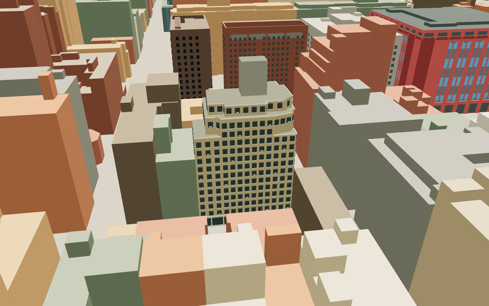

01 · Neon graphite
RECOMMENDED · CLOSEST TO CURRENT BRANDA near-black interface with neon-green actions and purple secondary accents. Strong contrast helps the map remain the main surface.
Three color directions for the map interface. Each keeps the club’s green and purple accents while preserving recognizable building materials. These are samples for review; they do not change the live map.

Find your way around NYU’s spaces for learning, making, and connecting.
16 Washington Place
Entrepreneurship at NYU
A near-black interface with neon-green actions and purple secondary accents. Strong contrast helps the map remain the main surface.
Warm, light panels with deep green controls. Neon green is reserved for markers; a deeper purple keeps small accents readable on white.
Charcoal-violet surfaces and soft lavender details, anchored by the club’s green actions. A distinct evening mood without recoloring real facades.